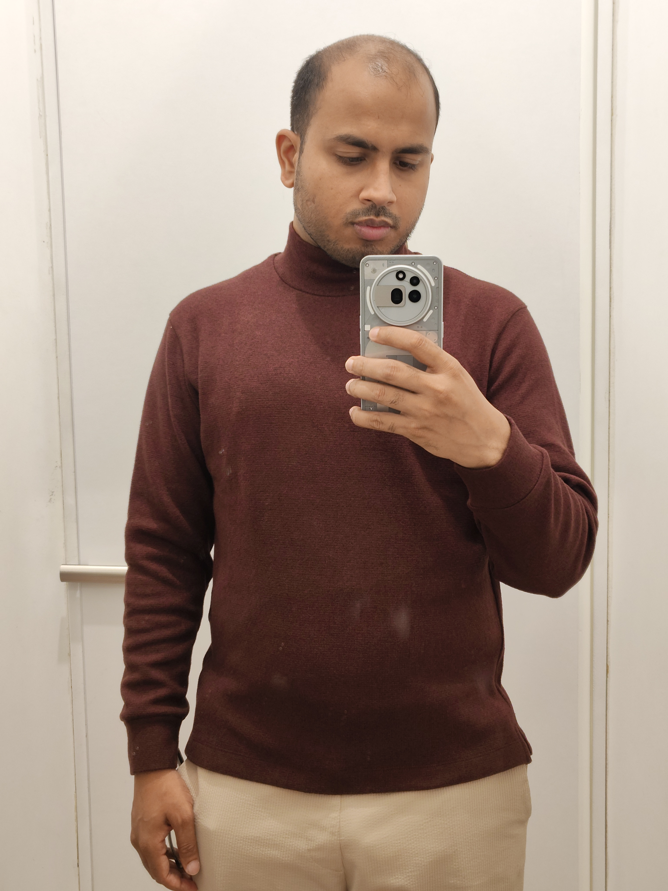

I architect distributed backend workflows, autonomous AI voice agents, and high-throughput microservices—turning messy logistics and financial operations into reliable software.

My path into software didn’t start with a computer science textbook—it started in Mechanical Engineering at NIT Allahabad. Somewhere between studying physical systems and writing scripts to automate tedious work, I realized I loved designing things that run cleanly under load.
Today, I build backend and AI systems at Delhivery in Gurgaon, working across a 15+ microservice ecosystem powered by Kafka, Redis, Python, and Node.js. Whether it’s preventing race conditions in B2B billing state machines or giving an autonomous voice agent secure access to internal APIs via MCP, I care most about clarity, resilience, and measurable impact.
Nothing resets a long day of debugging faster than a fast-paced rally. Badminton keeps my reflexes sharp, clears the head, and brings out the competitive streak away from a keyboard.
Always up for a change of scenery—whether it’s a quick weekend getaway to the hills or wandering through an unfamiliar neighborhood just to see how a new city moves.
A bit of a foodie at heart. Half the fun of visiting a new place is hunting down local favorites, trying new flavors, and finding spots worth going back to.